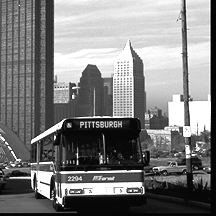

You are invited to participate in a Public Art Project called "End of the Line: Building Bridges with Pittsburgh's Busways." All ages are welcome to attend free workshops to be offered at Pittsburgh Public Libraries. The final art piece will be computer collages displayed on the outside of PAT buses. The collage designs will include historic and contemporary images from Pittsburgh's neighborhoods based on community input at the workshops. At the workshops, you can learn about how to make collages, its history as an art form and the process of creating images for billboards and the Internet on the computer. Using the libraries' photocopy machine, simple art and photographic materials, you will be able to create your own collage and collaborative artwork. |
 |